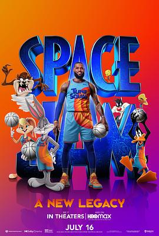

空中大灌篮：新传奇 / Space Jam: A New Legacy
又名：太空也入樽：改朝换代(港) / 太空也入樽2(港) / 怪物奇兵 全新世代(台) / 空中大灌篮2：新传奇 / 怪物奇兵2 / 宇宙大灌篮2 / 宇宙大灌篮：新传承 / Space Jam 2008 / Space Jam 2: A Jogada Continua / Space Jam Twenty 16
emmm这谁演的
作品信息
| 导演 | 马尔科姆·D·李 |
| 编剧 | 朱埃尔·泰勒 / Tony Rettenmaier / Keenan Coogler / 特伦斯·南斯 / Jesse Gordon / Celeste Ballard / 蒂莫西·哈里斯 / 史蒂夫·鲁德尼克 / 赫舍尔·魏因格罗德 / 莱奥·本韦努蒂 |
| 主演 | 勒布朗·詹姆斯 / 赞达亚 / 吉姆·卡明斯 / 索尼夸·马丁-格林 / 唐·钱德尔 / 弗雷德·塔特西奥 / 特蕾丝·麦克尼尔 / 马丁·科勒巴 / 加布里埃尔·伊格莱西亚斯 / J. Michael Tatum / 豪莎·罗克莫雷 / 艾瑞克·鲍扎 / 鲍伯·伯根 / 杰夫·伯格曼 / 坎迪·米洛 / 克里斯·戴维斯 / 凯蒂·麦克凯布 / 斯凯勒·拜布尔 / 克里斯·保罗 / 彼得·康奈尔 / 克莱·汤普森 / 德雷蒙德·格林 / Hassan Said / Erin Flannery / 德里克‧吉尔伯特 / G·莱恩·希尔曼 / 卡桑德拉·斯塔尔 |
| 类型 | 喜剧 / 动画 / 运动 |
| 制片国家/地区 | 美国 |
| 语言 | 英语 |
| 上映日期 | 2021-07-16(美国) |
| 片长 | 120分钟 |
| IMDb | tt3554046 |
说过什么
2021-07-19 21:02:38
广播 · 想看
emmm这谁演的
最后一次看到是 2026-08-01T11:08:58+10:00 · 豆瓣原页